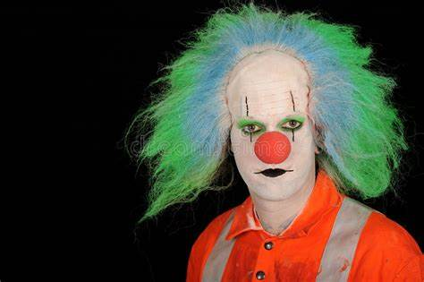
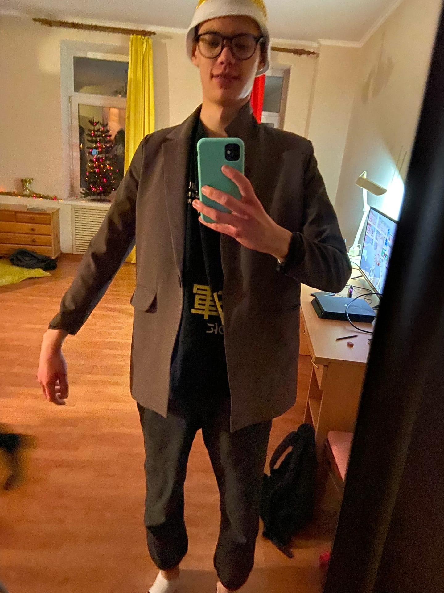
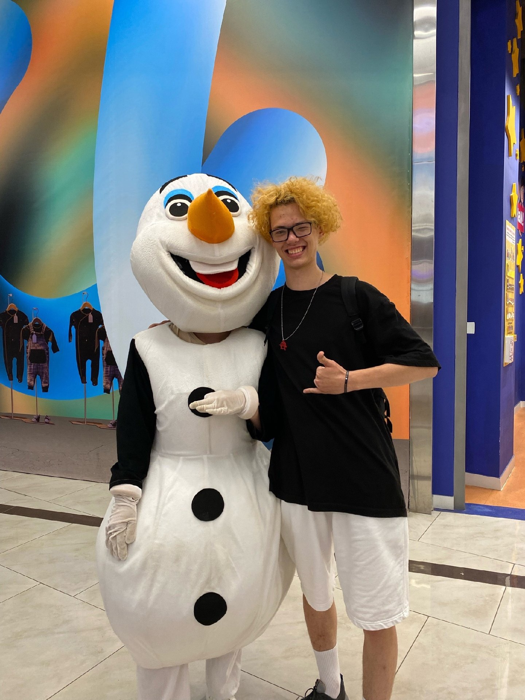
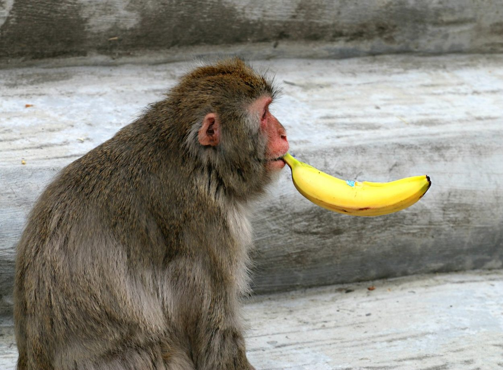
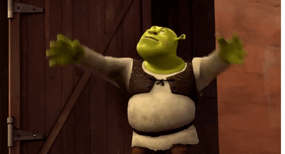

Дима - это негр
Но почему батя Димы белый?..
Шёл однажды Дима по дорожке тёмным и поздним вечером. Вдруг слышит,
что сзади него идёт какой-то мужик. Дима немного напряг свою жопу, начал ускорять
темп своего шага.
Мужик, что шёл за ним, не отставал, даже как-то ускорял свой темп. Диме от этого
стало не по себе и он решил скрыться в темноте.
Его больше не видели...
Страница cамого клоунского НЕгрА
Факты о диме

Дима - это зелень
Позеленел от стресса 😥
Дима работает в Яндекс доставке. Поэтому он сначала стал жёлтым. Но спустя какое-то время Дима превратился в зелёного негра. Мы считаем, что его завербовали Диливери.
Позеленел от стресса 😥
Дима работает в Яндекс доставке. Поэтому он сначала стал жёлтым. Но спустя какое-то время Дима превратился в зелёного негра. Мы считаем, что его завербовали Диливери.

Дима - это Дима
А че...
Какой же Дима будет Димой, если он не будет Димой? Правильно, Никакой Дима не будет Димой, если он не будет Димой. А значит, наш дима - это Дима, ведь Дима - это Дима.
Дима был Димой. Дима стал Димой. Мы надеемся, что Дима будет Димой. Ведь без Димы Димы не будет, а будет не Дима, а значит, нам нужен Дима, который всегда Дима.
А че...
Какой же Дима будет Димой, если он не будет Димой? Правильно, Никакой Дима не будет Димой, если он не будет Димой. А значит, наш дима - это Дима, ведь Дима - это Дима.
Дима был Димой. Дима стал Димой. Мы надеемся, что Дима будет Димой. Ведь без Димы Димы не будет, а будет не Дима, а значит, нам нужен Дима, который всегда Дима.

Дима - это латентный пидор
Голубочки...
Какой же Дима будет Димой, если он не будет Димой? Правильно, Никакой Дима не будет Димой, если он не будет Димой. А значит, наш дима - это Дима, ведь Дима - это Дима.
Дима был Димой. Дима стал Димой. Мы надеемся, что Дима будет Димой. Ведь без Димы Димы не будет, а будет не Дима, а значит, нам нужен Дима, который всегда Дима.
Голубочки...
Какой же Дима будет Димой, если он не будет Димой? Правильно, Никакой Дима не будет Димой, если он не будет Димой. А значит, наш дима - это Дима, ведь Дима - это Дима.
Дима был Димой. Дима стал Димой. Мы надеемся, что Дима будет Димой. Ведь без Димы Димы не будет, а будет не Дима, а значит, нам нужен Дима, который всегда Дима.


Ну короче... Дима

Нет
Короче Дима крутой
Кто прочитал, тот лох